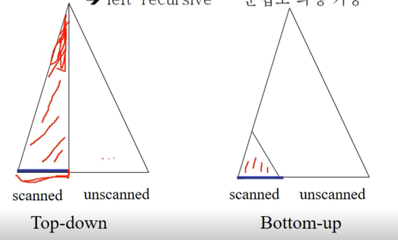
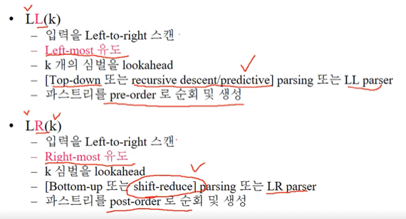
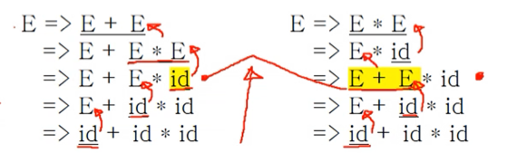
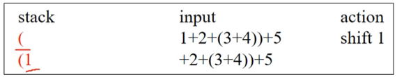
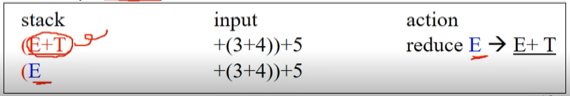
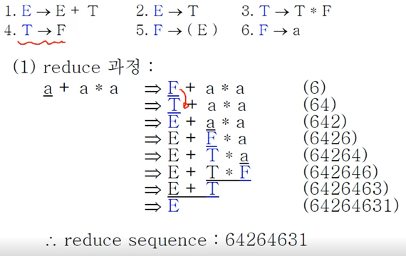
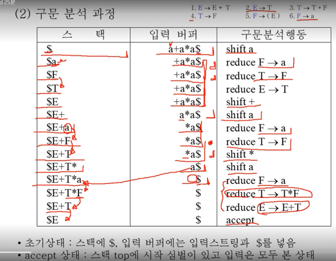
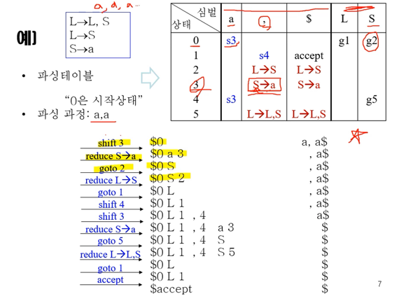

충남대학교 컴퓨터공학과 조은선 교수님의 "컴파일러 개론" 강의를 필기한 내용입니다.
다소 잘못된 내용과 구어적 표현 이 포함되어 있을 수 있습니다.
Bottom-up parsing
- 일단 Bottom-up방식이 더 강력하다고들 한다 - 더 엉망인 문법로 파싱이 가능하기 때문
- Left-recursive한 문법을 보통 엉망인 문법이라고 하고 Bottom-up 방식은 이런놈까지 파싱이 가능하다
- 이것은 Bottom-up방식으로는 생성규칙을 선택하는 것을 더 많은 토큰이 들어올 때 까지 미룰 수 있기 때문에 그렇다
- 이 아래 그림을 보면 좀 더 이해될거임

- Top-down방식은 스캔된 토큰을 가지고 루트까지 만들어지기 때문에 만들어야되는 트리가 더 크다
- 하지만 Bottom-up방식은 스캔된 토큰으로 만들 수 있는데까지만 만들기 때문에 만들어야되는 트리의 크기가 더 작기 때문
Bottom-up의 과정
- 일단 Bottom-up은 Terminal 심벌부터 시작하여 root인 시작 심벌까지 도달하면 성공적으로 완료가 된다
- 즉, 생성규칙의 RHS를 보고 매치된다면 LHS로 치환하는 과정을 반복하게 됨
- Bottom-up은 왼쪽부터 역 유도를 하기 때문에 결과적으로 우측유도의 역순을 진행하는 것과 동일하며 결과적으로 우파스의 트리가 만들어진다
LL, LR

- 일단 LL은 니가 Top-down에서 배운 그 LL이 맞다
- 그리고 LR파싱이 Bottom-up에서 사용하는 파싱 방식인데 위에 정리되어 있는 것을 좀 보면
- LL, LR에 공통적으로 들어가는 L은 Left-to Right라는 소리이다 - 왼쪽부터 읽어나간다는 소리임
- 그리고 LL의 경우에는 좌측유도를 해 좌파스가 생성되므로 L이 하나 더 붙는 것이고
- LR의 경우에는 우측유도의 역순을 해 우파스가 생성되므로 R이 붙게 되는 것
- k는 뭐 전에 배웠던대로 몇개의 심벌을 보고 결정할지를 나타내는 lookahead이고
- 근데 여기서 중요한 것은
- Top-down, Recursive decent(predictive), LL parsing은 전부 비슷한 맥락의 용어라는 것과
- Bottom-up, Shift-reduce, LR parsing은 전부 비슷한 맥락의 용어라는 것 꼭 기억하덤둥
- 그리고 LL의 경우에는 루트를 먼저 방문하기 때문에 트리 방문 순서 중 Pre-order방식이고
- LR의 경우에는 자식을 먼저 방문하기 때문에 트리 방문 순서 중 Post-order방식이다
Reduce, Handle
- Reduce는 간단하다 - Derive의 반대가 Reduce인 것
- 즉, 생성규칙의 LHS를 RHS로 치환하는 것이 Derive였다면, RHS를 LHS로 치환하는 것을 Reduce라고 한다
- 따라서 Bottom-up 방식은 시작심벌이 나올 때까지 Reduce하는 과정이라고 이해할 수 있다
- Handle은 Reduce될 부분을 의미하는 것
- 예를 들면 다음과 같다
- A → aBc라는 생성규칙이 있을 때
- aBc를 보고 A로 역유도 하는 것을 Reduce라고 하고
- 이때 aBc부분이 reduce되는 것이므로 이 부분을 Handle이라고 함
- 즉, Reduce는 동작이고 Handle은 동작이 아닌 특정 문장형태를 나타냄
- Handle을 보고 이걸 토대로 생성규칙을 뒤져보면 Reduce할 수 있는 생성규칙을 찾을 수 있다는 소리
Ambiguous grammar
- 일단 모호한 문법이라는 것은 Left / Right most derivation을 했을 때 여러 형태의 파스 트리가 생성되는 경우를 의미한다는 것 기억나제
- 이때 모호한 문법에 대해서는 Bottom-up parsing을 할 때도 모호한 상황이 일어나게 된다
- 바로 Handle이 두개 이상 존재해 어떤 놈을 Reduce할 지 알 수 없을때 Bottom-up에서의 모호함이라고 한다

- 위의 예제를 보면 E + E * id까지는 똑같은데 이때 id도 handle이 될 수 있고 E + E도 handle이 될 수 있다 - 이때 모호하다라고 하는 것
Shift & Reduce
- 얘는 Top-down에서의 pop & expand와 유사한놈이다
- Pop & expand에서도 스택이 존재했고 여기서 pop과 expand를 반복하며 파싱을 했듯이
- Shift & Reduce에서도 스택이 존재하고 Shift와 Reduce를 반복하며 파싱을 하게 된다.
- 근데 여기서 중요한 것은 Pop & expand할때는 생성규칙을 뒤집어서 넣었지만 Shift & Reduce할때는 뒤집는거 없이 그냥 넣게 된다는 것주의혀
- 일단 Shift는 간단하다 - 스택의 top에 Handle이 보일때까지 입력 심볼을 계속 밀어 넣는 것을 의미한다
- 그리고 Reduce는 이제 Shift를 하다 보니 스택의 top에 Handle이 보여 그것을 생성규칙의 LHS로 치환하는 것을 의미한다

- 즉, 위 그림처럼 Shift는 스택에 입력 심볼을 밀어 넣는 것을 의미하고

- 위 그림처럼 스택에 Handle이 보여 이놈을 LHS로 치환하는 것을 Reduce라 하는 것
- 따라서 Reduce의 과정에는 입력 버퍼에는 영향을 주지 않는다

- 연습해봐라

- 위의 그림이 좀 더 구체적인 작동 과정이다
- 보면 초기에는 스택에는 $만 있고 입력버퍼는 입력 문자열과 $로 닫혀있는 것을 볼 수 있다
- 그리고 Shift & Reduce를 하며 진행하다가
- 마지막에 스택에는 $시작심벌, 입력버퍼에는 $만 남아있으면 accept하며 종료된다
LR Parsing Table
- 근데 이런 문제가 있다 - 만약 Reduce가 가능할때, 더 Shift를 할 것이냐 아니면 바로 Reduce를 할 것이냐 결정해야 되는 상황이 올 수도 있다
- 또한 Handle의 길이를 하나로 특정할 수 없을 때 얼마만큼을 Handle로 보고 Reduce를 할 것이냐의 이슈가 있다
- 이건 모호한게 아닌가?
- 어쨋든 Reduce를 할 수 있는 Handle이 여러 경우의 수가 존재 할 때 어느 정도를 Handle로 보고 Reduce를 할 것이냐의 이슈가 있다.
- 이런 것을 해결하기 위해서 등장한 것이 LR Parsing table이다

- 예시로 이해하는 것이 제일 간단하쥬
- 일단 왼쪽 위에가 생성규칙이고
- 오른쪽 위에 LR Parsing table 이 있다 - 저렇게 행 index로는 상태가 들어가고 열 index로는 Terminal과 Non-terminal이 차례로 들어간 형태이다
- 일단 테이블의 왼쪽 부분에는 열 index에 Terminal이 들어가게 되고 이 부분을 Action table이라고 한다
- 이 부분의 셀에는 세가지의 값이 들어갈 수 있다 - S숫자, 생성규칙, accept
- S숫자는 Shift하고 그 다음 상태를 해당 숫자로 해라라는 의미가 된다
- 그리고 생성규칙은 해당 생성규칙으로 Reduce해라 라는 의미가 된다 - 근데 Reduce는 생성규칙의 반대이므로 생성규칙의 화살표대로 가는게 아니고 화살표의 반대로 변환해주면 된다
- 뭐 accept는 accept하고 끝내라는 의미겟지
- 따라서 어떤 상태와 어떤 Terminal을 매칭한 셀에 있는 action을 취해주면 되는 것이다
- 그 다음으로는 테이블의 오른쪽 부분에는 열 index에 Non-terminal이 들어가고 이 부분을 GOTO Table이라고 한다
- 여기에는 들어갈 수 있는 값이 하나밖에 없다 - G숫자 - 얘는 해당 숫자의 상태로 가라 라는 의미가 된다
- 일단 테이블의 왼쪽 부분에는 열 index에 Terminal이 들어가게 되고 이 부분을 Action table이라고 한다
- 그리고 이 파싱 테이블을 이용해 파싱하는 과정을 보면
- 초기 설정에는 스택에는
$0, 입력버퍼에는 입력 문자열과 $가 들어간다- 스택에 $로 끝나는게 아니라 0이 들어가는 이유는 0이 초기 상태이기 때문이다.
- 그 다음에는 다음의 두가지 동작을 반복해주면 된다
- 만약 스택의 top에 상태가 있으면 이놈이랑 입력버퍼의 Terminal을 가지고 Action table에서 하라는 대로 하면 된다
- 위의 예제에서 맨 첫번째 줄을 보면 top의 상태가 0이고 입력버퍼의 terminal이 a이므로 이 둘을 매칭하면 S3이다
- 따라서 shift를 하고 다음 상태를 3으로 만들면 두번째 줄이 된다
- 만약 스택의 top에 상태가 아닌 Non-terminal이 있으면, 해당 Non-terminal의 바로 이전 상태와 Non-terminal을 가지고 GOTO table로 가서 다음 상태를 가져온다
- 근데 스택의 top에 상태가 아닌 Non-terminal이 있는 경우는 Reduce를 한 뒤에밖에 없다
- 따라서 Reduce를 한 뒤에는 반드시 GOTO를 진행해준다고 습관들이면 좋더라
- 위의 예제에서 보면 우선 두번째줄에서 3과 콤마를 보고 Reduce를 해야 된다는 것을 알아내게 된다
- 여기서 유의할 점은 상태는 사용하고 나면 스택에서 사라진다는 것이다 - 따라서 3이 사라지고 스택의 a를 S로 reduce하게 된다
- 그 다음에는 스택의 top에 S밖에 없기 때문에 이놈과 이놈 바로 이전의 상태인 0을 들고 GOTO table로 간다
- 가서 보니까 g2라고 적혀있는 것을 볼 수 있고 따라서 다음 상태는 2가 되게 된다
- 만약 스택의 top에 상태가 있으면 이놈이랑 입력버퍼의 Terminal을 가지고 Action table에서 하라는 대로 하면 된다
- 유의할 점 또 하나는 top에 있는 상태만 유의미하다는 점이다
- 위의 예제에서 10번째 줄을 보면
- 상태 5와 terminal $를 매칭해 S → L, S의 Reduce를 하게 된다
- 이때 스택 사이사이에 있는 상태들은 전부 날라가게 된다 - 중간중간 껴있는 1, 4는 그냥 버리면 된다는 것
- 파싱 테이블 만드는건 다음의 세 단계를 거치면 된다
- 가능한 상태에 대해 정의하고
- 상태들의 상태 전이도를 Deterministic Finite Automata를 정의하고
- 잘 Parse table에 녹여내면 된다
- 근데 얘네들은 다음시간에 배운댄다
LR의 종류
- 지금까지 배운 것은 일단 shift를 해놓고 보는 것이므로 Lookahead 가 0이다 - 따라서 이런 것을 LR(0) 이라고 함 - Shift-reduce 가 LR(0) 의 대표적인 예라고 생각하면 된다
- 그리고 lookahead를 하나 보는 LR(1) 등이 있는데
- LR(0)은 간단한 대신 할 수 있는게 별로 없고 LR(1)는 너무 어렵기 때문에 이 중간에 SLR, LALR등이 더 있다